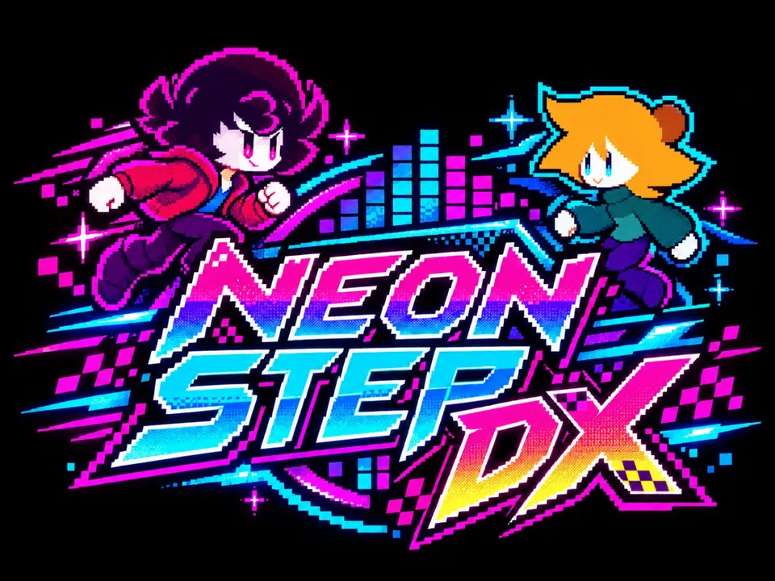

INTERVALO DESBLOQUEADO
NEON
STEP DX!
O jogo secreto do Modo Treino reúne dois heróis, mundos completos, inimigos e novas regras de exploração! Escolha Josperd ou Camila e pule cada vez mais alto nesse arcade retrô.
✦ PULO AUTOMÁTICO
✦ UNIVERSOS E PORTAIS
✦ RECORDES LOCAIS
// COMO JOGAR
←→
TecladoSetas ou teclas A e D.
◀▶
CelularSegure os botões ou toque nas laterais.
✳ UM ARCADE ESCONDIDO NO TREINO
Quanto mais alto, mais difícil: drones elétricos, plataformas estreitas, transportadoras, móveis e frágeis. Pegue escudos, impulsos e fitas para aumentar seu combo. Você tem três vidas!
NEON_STEP_DX
PONTOS
0000
RECORDE
0000
FITAS
00

SELECIONE SEU PERSONAGEM
◈ ◈ ◈JOSPERD
MOVER / ⚡ ATIRAR
MOVER / ⚡ ATIRAR
♫ PICK YOUR PLAYER!00:00 NO UNIVERSO
ARCADE SYSTEM // 012 ONLINE OFFLINE